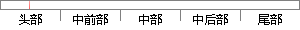

解放手机空间，节省流量。
片段位置图

相似结果|
相似片段 1：压缩技术，百度手机卫士可以在云端帮助用户压缩手机上网图片的大小，再显示到用户的手机上，从而减少图片下载所需的流量。据了解，使用百度手机卫士可以帮助微信、QQ 空间等应用节省 30%—40%的上网流量，而淘宝、京东等图片更多的应用则可以节省超过 60%的上网流量，大大延长流量包的使用时间。
|
※ 片段修改建议 ※
近似词参考：- 放手：罢休 放胆 甩手 松手 撒手
- 节省：节流 节约
系统自动生成语句：解罢休机空间，节流流量。
注：本片段修改建议为系统自动生成，仅供参考。